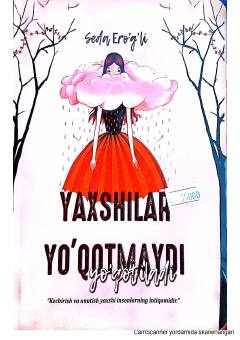

YYYaxshi insonlarning kechirish va unutish orqali o'z qadrini saqlab qolishi haqidagi ta'sirli asar.
Ushbu asar insoniy munosabatlar, kechirish va unutishning ahamiyati haqida hikoya qiladi. Muallif yaxshi insonlarning hayotdagi o'rni va ularning boshidan kechirgan qiyinchiliklarini ta'sirli tarzda yoritib beradi.